University of Wyoming
Khaled M.
Elokely, PhD
From molecular recognition
to drug discovery.
I bring computational and medicinal chemistry together to understand how molecules interact with biological targets—and use that understanding to guide the design of bioactive compounds.
Explore my researchDivision of Pharmaceutical Sciences
School of Pharmacy · College of Health Sciences
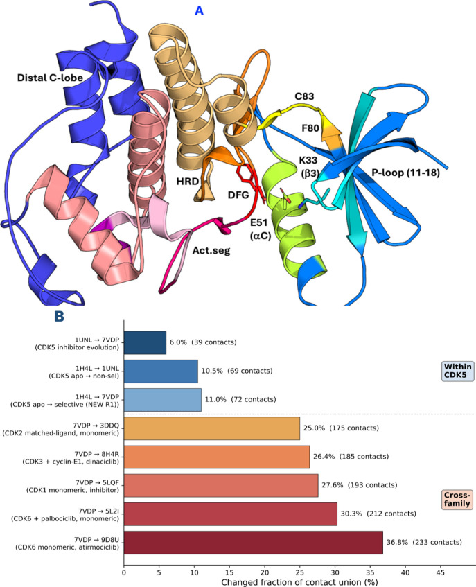
CDK5 topology and family comparison
A region map and contact-network comparisons place CDK5 in the context of related kinases, linking domain-level organization with the search for selectivity.
Nael, Alakonda & Elokely · JCIM (2026), Fig. 8 · CC BY 4.0 · LicenseResearch interests
Six connected perspectives
on molecular discovery.
Reliable data, protein structure, molecular timing, and stereochemistry each reveal a different part of the drug-discovery problem. My research connects these perspectives through reproducible computational methods and medicinal chemistry.
Research focus
Data Curation
Reliable evidence begins with a defined dataset.
My work makes the decisions behind a biomedical dataset explicit: which chemical representations, assays, endpoints, units, and source records belong together. Dataset contracts, provenance, and quality diagnostics help turn heterogeneous pharmacology records into reproducible research assets.
Our accepted Digital Discovery paper presents a reusable, OECD-anchored curation and benchmarking framework demonstrated for opioid receptors. CURATO-OPIOID makes pharmacological mechanism and assay readout explicit before modeling, with traceable curated data, a versioned ontology, and scaffold-locked external validation.
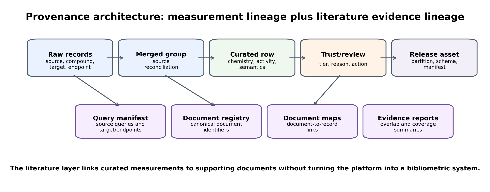
Measurement and evidence lineage
A research schematic connecting curated measurements to their source records and supporting literature. Each stage preserves the information needed to inspect and reuse the resulting asset.
Nael et al. · Digital Discovery (accepted, 2026) · Author research schematic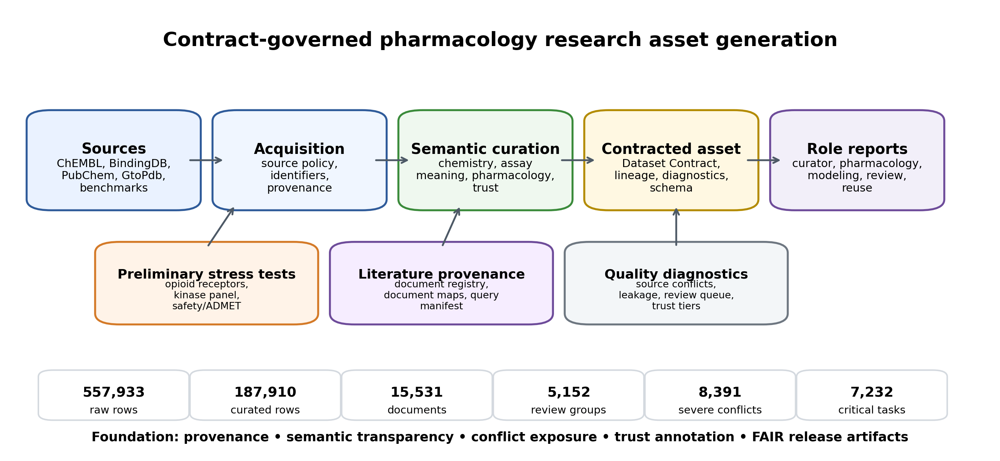
From public records to contracted assets
The framework integrates source acquisition, chemical and assay semantics, dataset contracts, quality diagnostics, and review.
Nael et al. · Digital Discovery (accepted, 2026) · Author research schematicResearch focus
Contact Networks
Reading protein structure through its connections.
A protein is more than a structural overlay or a binding pocket. I study how networks of residue contacts change across molecular states and related proteins, using topology-aware comparisons to locate gained and lost contacts throughout a protein domain.
Our CDK-family study examines how selective CDK5 inhibitors relate to contact redistribution near the ligand and in the distal C-lobe. These structural comparisons provide a quantitative view of selectivity and a foundation for testable medicinal-chemistry hypotheses.
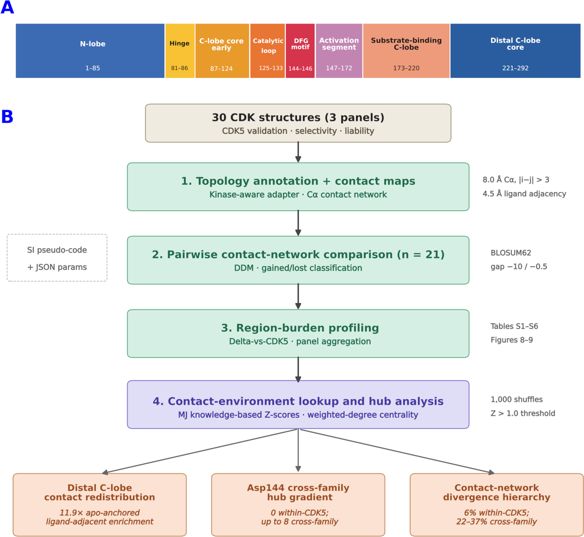
Contact-network phenotyping
Kinase-domain annotation connects residue-contact comparisons to region-level patterns across a panel of CDK structures.
Nael, Alakonda & Elokely · JCIM (2026), Fig. 2 · CC BY 4.0 · LicenseCDK5 topology and family comparison
A region map and contact-network comparisons place CDK5 in the context of related kinases, linking domain-level organization with the search for selectivity.
Nael, Alakonda & Elokely · JCIM (2026), Fig. 8 · CC BY 4.0 · LicenseResearch focus
Protein Timing
The kinetics clock: defining what a rate measures.
My kinetics-clock research asks how to obtain reproducible molecular transition measurements and when the available evidence supports a reported rate. State definitions, transition counting, sampling resolution, and uncertainty all contribute to the measurement.
In our alanine-dipeptide benchmark, two standard estimators agree closely when given matched states, while two conventional state definitions produce a larger difference on a fast transition. The work motivates publishing state definitions alongside reference rates and preregistering analysis rules before scoring measurements.
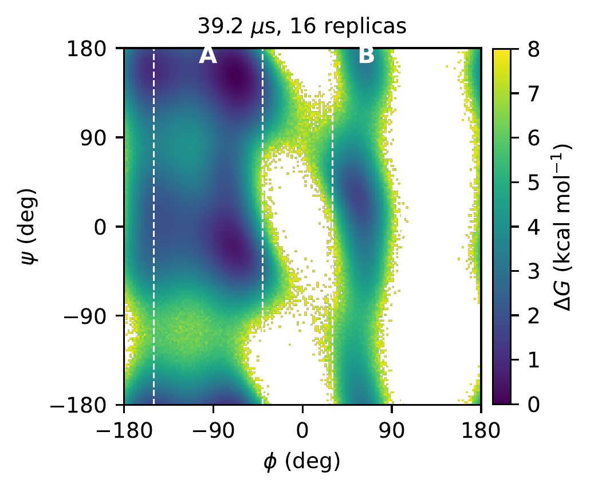
A conformational landscape for the clock
The alanine-dipeptide free-energy landscape used to benchmark conformational transitions. Dashed lines identify the core-state boundaries.
Nael, Alakonda & Elokely · ChemRxiv preprint (2026), Fig. 2 · Author figure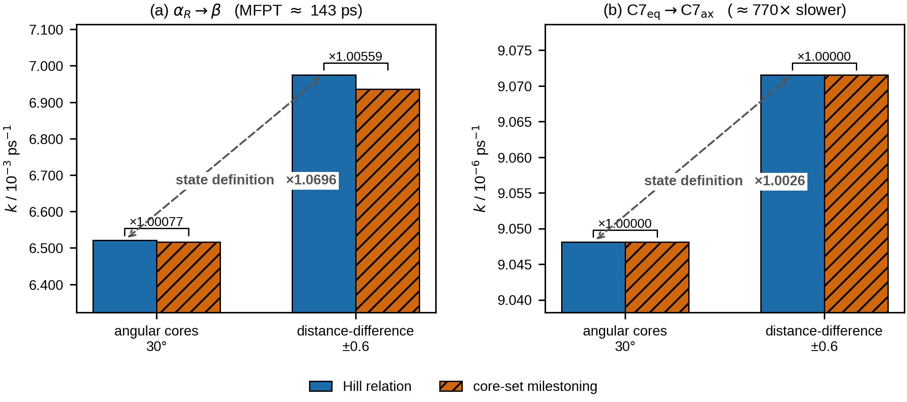
State definition and estimator effects
The same trajectories support a comparison of estimator choice and state definition on fast and slow transitions. Rates are interpreted together with the states they describe.
Nael, Alakonda & Elokely · ChemRxiv preprint (2026), Fig. 5 · Author figureResearch focus
FragFlow
Finding binding opportunities within lipid bilayers.
FragFlow maps cosolvent enrichment around membrane proteins using a reference that varies with bilayer depth. Accounting for the membrane environment helps distinguish local cavity enrichment from the tendency of a probe to partition into the surrounding lipid.
The project examines membrane-embedded sites in the ADP/ATP carrier, C5aR1, and TREK-1. Depth-resolved scoring, explicit reference profiles, and frozen analysis rules make both site detection and its limits inspectable.
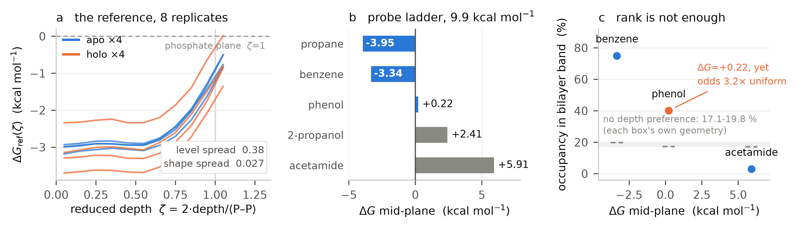
The membrane-depth reference
Probe partitioning and reference profiles vary with membrane depth. Individual replicas and probe-specific baselines keep those differences visible.
Nael, Alakonda & Elokely · FragFlow, Fig. 4 · Regenerated from released data and figure code · CC BY 4.0 · License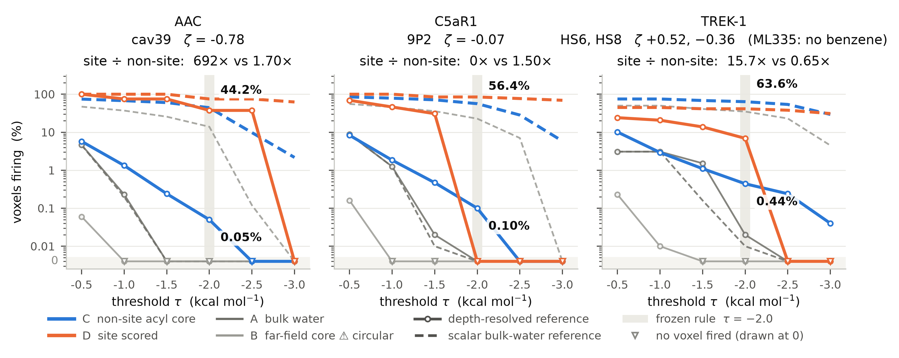
Testing the scoring reference
Depth-resolved and scalar bulk-water references are compared on identical voxel populations. The curves show detection behavior across thresholds, including sites that do not pass the frozen rule.
Nael, Alakonda & Elokely · FragFlow, Fig. 5 · Regenerated from verified released data · CC BY 4.0 · LicenseResearch focus Method development
KChiro
Stereochemical assignments with explicit uncertainty.
KChiro combines conformational ensembles and electronic circular dichroism calculations to support absolute-configuration assignments. Comparisons across computational methods help assess spectral agreement and identify cases where the evidence is insufficient for confirmation.
The developing protocol examines continuous spectral agreement, Cotton-effect sign patterns, and method-dependent spectral placement. Abstention is an intended outcome when the criteria for a defensible assignment are not met.
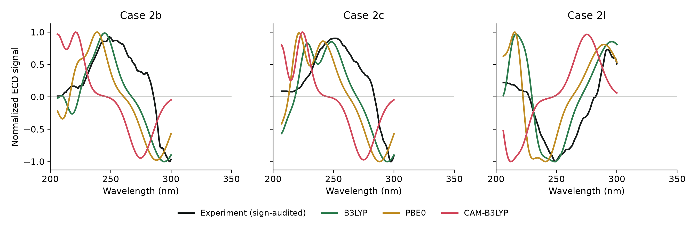
Experimental and computed ECD
Representative experimental benchmarks and computed ensembles. Curves are amplitude-normalized for shape comparison; the experimental sign audit is applied and wavelengths are unshifted.
KChiro research project · Replotted from the original ensemble CSVs for readability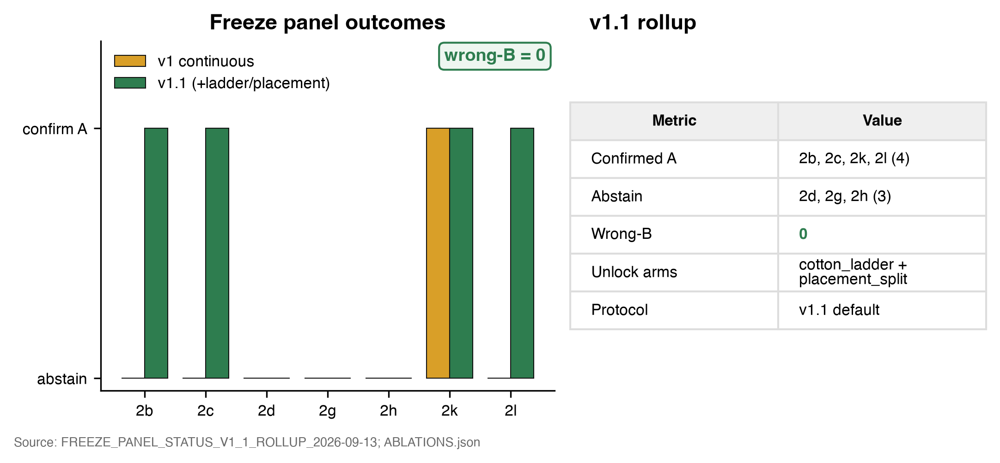
Confirmation and abstention
The seven-case frozen panel reports four confirmations and three abstentions under protocol v1.1. These results describe this limited research panel; broader validation remains part of the developing method.
KChiro research project · Protocol v1.1 evaluation figure (2026)Research focus Biological evaluation ongoing
Medicinal Chemistry
Structure-guided CDK5 inhibitor design and synthesis.
My CDK5 program combines molecular modeling, synthetic medicinal chemistry, and biological evaluation to develop candidates for Alzheimer’s disease research. Kinase contact-network comparisons guide design hypotheses aimed at improving selectivity over related CDKs. Using structure-based design, we have synthesized a library of 46 small molecules across four series: Boc-protected derivatives, free-base derivatives, imines, and amides.
Our synthetic strategy uses N-alkylation and N-benzylation, palladium-catalyzed C–N coupling, Boc deprotection and free-base preparation, imine formation, and amide coupling to explore chemical diversity. Compounds are characterized using proton and carbon NMR and high-resolution mass spectrometry (HRMS). Ongoing evaluation against the CDK5/p25 complex aims to identify active leads for subsequent optimization; potency and selectivity are still being established.
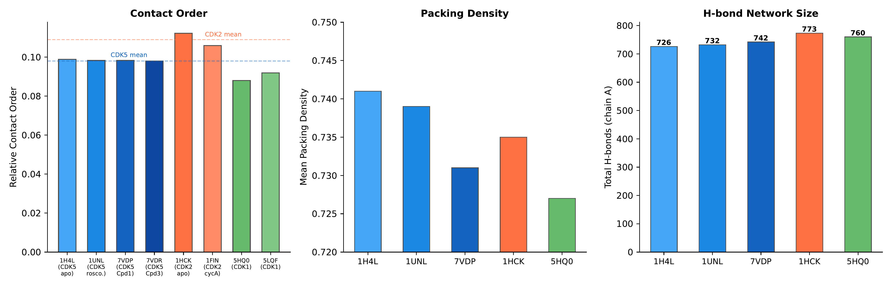
A structural fingerprint for CDK5
Contact order, packing density, and hydrogen-bond counts offer complementary views of the kinase structures used in the CDK5 project. These comparisons inform structural hypotheses for inhibitor discovery.
Nael, Alakonda & Elokely · JCIM (2026), Fig. 11 · CC BY 4.0 · License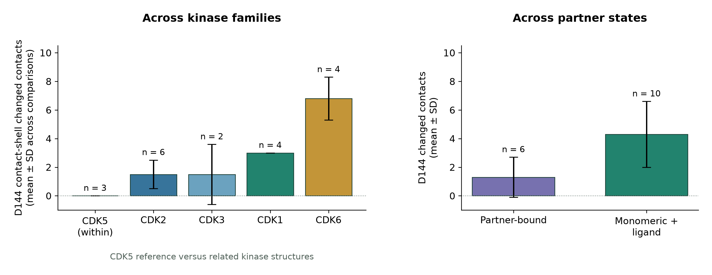
Comparing the D144 contact shell
Cross-family contact-shell changes provide a structural comparison independent of the statistical-potential lookup. Values and sample sizes reproduce the published Figure 10 results.
Nael, Alakonda & Elokely · JCIM (2026), Fig. 10 · Replotted from published values · CC BY 4.0 · LicensePublications & resources
Selected work
- Accepted paper
Pharmacological Stratification of Public Bioactivity Databases: A Reusable, OECD-Anchored Curation and Benchmarking Framework Demonstrated for Opioid Receptors
Nael et al. Digital Discovery · 2026
- Published paper
Defining the Data set Defines the QSAR Claim
Nael, Alakonda & Elokely Journal of Chemical Information and Modeling · 2026
- Published paper
Contact-Network Phenotyping of the CDK Family
Nael, Alakonda & Elokely Journal of Chemical Information and Modeling · 2026
- Preprint
What Limits a Reference Rate: The State Definition, Not the Estimator
Nael, Alakonda & Elokely ChemRxiv · 2026
- Preprint
FragFlow: depth-resolved cosolvent mapping recovers cryptic and allosteric sites inside lipid bilayers
Nael, Alakonda & Elokely ChemRxiv · 2026
- Published paper
MolScope: A Transparent Representation-Aware Workflow Toolkit for Reproducible Medicinal-Chemistry Triage
Khaled M. Elokely Molecular Informatics · 2026
Explore the methods and data behind the research.
Khaled M. Elokely, PhD
Division of Pharmaceutical Sciences
School of Pharmacy, College of Health Sciences
University of Wyoming
Laramie, WY 82071
Room 398
307-766-6136
Room 396
307-766-2954